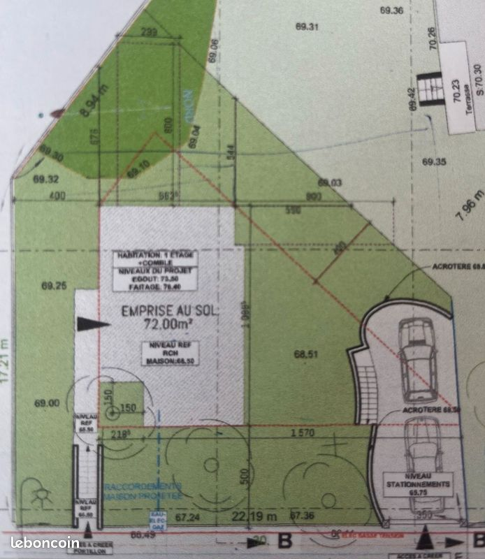
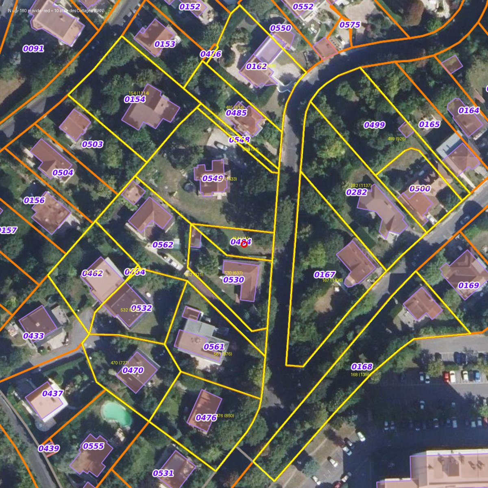

Rezumat într-o pagină
Ce știm sigur (verificat pe surse publice), ce arată singura poză din anunț și ce rămâne de lămurit la fața locului.
Terenul
| Lotul | Fâșia de est a parcelei AK 549 (grădina vilei „Remarquable” de la nr. 10, 1 433 m²), de-a lungul aleii: 22,19 m front, 17,21 m adâncime pe limita cu AK 484, pinten de 2,39 m în fund. Nu există încă în cadastru. |
| Vânzătorul | A cumpărat vila (AK 196 + 484 + 549) pe 25-05-2021 cu 942 028 €. Păstrează vila și AK 484 (241 m², la sud de lot, 10,3 m front). |
| Relief | Aleea la 66,5 m (coboară spre nord la ~65,8); lotul la 67,2–67,4 la zidul de incintă, 69,0–69,3 pe linia casei, terasa vilei la 70,30. Vreo 3 m cădere spre alee, cea mai abruptă în primii 5 m. |
| Reguli | PLU UDb: emprise 20 % (80 m²), 7 m streașină / 10 m coamă de la terenul natural, 5 m de alee, 8 m cu ferestre / 4 m fără, 75 % verde. SPR AP2d: aviz conform ABF pe orice autorizație; arbori cu > 100 cm circumferință la 1 m intangibili; 1 arbore înalt / 200 m²; gard obligatoriu. Argilă forte → studiu G1 datorat de vânzător. ASA din 1929: alei private, rețea pluvială, cotizație ~700–1 145 €/an (neverificat). |
| Divizarea | Din 1-sep-2026 = déclaration préalable cu aviz ABF (permis d'aménager doar dacă se creează echipamente comune). Stadiul: necunoscut. |
Proiectul din anunț (planul de masă)
| Casa | 72 m² la sol (max 80), ≈ 6,6 × 10,9 m, decupaj de 1,5 × 1,5 m în jurul unui arbore; „1 étage + comble”. |
| Cote | RDC 68,50 · streașină 73,50 · coamă 76,40. Încape în 7/10 m cu ~1,5 m rezervă, dar sunt doar 5,0 m pentru RDC + etaj. |
| Poziție | Exact pe liniile minime: 4,00 m de AK 484 (sud), 5,00 m de alee, 4–6 m de limita nouă (spate și nord). |
| Parcare | 2 locuri în tandem, bandă 3,5 m, săpate la cota aleii (65,75) cu zid de sprijin (acrotère 68,50), în colțul NE. |
| Acces | Scară pietonală nouă 66,50 → 68,50 cu portiță nouă în zidul de incintă, la capătul de sud. Nu există nicio verandă. |
| Rețele | Desenate: apă, electricitate, gaz, linia BT din alee. Lipsesc EU și EP (canalizarea). |
| Suprafețe | „180 m² utiles” ≈ 72 × 2,5 niveluri, bruți. Habitabil real ≈ 145–155 m²; surface de plancher ≈ 150–165 → arhitect obligatoriu. |
Cele trei probleme pe care planul le arată singur
UD7 Ferestrele
La 4 m de limită nu ai voie ferestre normale (allège sub 1,90 m); regula cere 8 m. Rămân fațada spre alee (est) și ~6 m din fațada nord. Dacă esquisse-ul are ferestre pe sud sau vest, nu e conform.
UD13 75 % verde
Pe plan: 404 − 72 casă − ~37 parcare − ~6 scară ≈ 289 m² = 71–72 %. Trebuie 303 m², din care 227 m² pământ plin. Nu iese fără parcare mai mică sau lot mai mare.
Lucrare Parcarea săpată
Groapă de 1,75–2,75 m și ~25 m de zid de sprijin în argilă cu expunere forte, lângă grădina vilei (rămâne cu 1,8 m deasupra). Lucrarea grea a proiectului; G2 serios; tandemul e la aprecierea urbanismului.
Ce e în regulă
- Prețul e la nivelul pieței: teren gol vândut în domeniu la 808 €/m² (2021); loturi de 700 m² listate la 800–860 €/m².
- Înălțimile încap: streașina la 4,2–5,5 m și coama la 7,1–8,4 m peste terenul natural.
- Nimic de demolat pe fâșie; platou la ~69 m pe linia casei.
- Vizavi, triunghiurile împădurite AK 167/168 sunt espace paysager protégé: vederea rămâne.
- SPR-ul nu dictează arhitectura unei case noi (doar peisaj, garduri, arbori).
Nu se semnează nimic fără
- Autorizația de divizare (DP/PA) acordată și purjată de recursuri.
- Avizul ABF scris, nu „concertare”.
- Planul geometrului și bornajul (suprafața exactă hors voirie).
- Studiul G1 (obligația vânzătorului).
- Răspuns pe hârtie la ferestre și la 75 %.
Levier
AK 484 (241 m², 10,3 m front) rămâne la vânzător, lipită de sud. Cu ea lotul ar avea ~645 m², 129 m² emprise, și limita de sud ar dispărea → ferestre pe sud. De întrebat de ce nu e inclusă (probabil parcările vilei).
Răspunsul vânzătorului
Primit pe WhatsApp în seara de 16-oct, la cele 7 întrebări. Paraphrazat; verdictul e al nostru, pe textul PLU.
| Întrebarea | Ce a răspuns | Ce înseamnă |
|---|---|---|
| 1 · Dosar + ABF scris | Proiectul e „au stade du permis d'aménager à obtenir”. A avut mai multe întâlniri cu urbanismul și ABF ca să afle ce așteaptă; arată elementele la vizită și poate da ébauche-ul de PA. | nimic autorizat Nicio autorizație depusă, niciun aviz ABF scris: „concertarea” din anunț = întâlniri. PA nedepus → 6–12 luni până putem depune noi un permis de construire. |
| 2 · Divizarea | A mandatat un geometru și are un plan de relevé în DWG. Întâi PA, apoi PC: „c'est la procédure dans cette zone protégée”. | relevé ≠ divizare Relevéul topografic nu e plan de divizare și nici bornaj. Din 1-sep-2026 divizarea în SPR cere în principiu o déclaration préalable, nu PA (de confirmat la urbanisme: scurtează cu luni). Cere DWG-ul: are cotele exacte. |
| 3 · Suprafețe | 3 niveluri: RDC cu intrare la nivelul străzii, îngropat 50–75 %; rez-de-jardin; comble mansardabil. „Environ 3 × 62 m²”, habitabilitatea RDC-ului „à déterminer suivant son niveau de profondeur”. | 180 m² = 186 bruți Nici el nu dă RDC-ul ca locuibil. Realist: 62 m² (rez-de-jardin) + ~45 m² (comble peste 1,80 m) + 0–62 m² (RDC, după cotă și lumină) = 105–170 m² habitabili. La 320 k€ terenul se judecă pe 110–125 m² siguri. |
| 4 · Ferestrele | Deschideri principale pe Est (stradă), Nord (parcare) și Vest (bosquet); secundare pe Sud (vecini). | vest neconform Est: da. Nord: ≥ 8 m doar pe partea dinspre alee. Vest: linia pintenului e la 5,6–8,5 m de fațada din spate, în cea mai mare parte sub 8 m → ferestre principale neconforme UD7 așa cum e desenat. Sud la 4 m: doar allège ≥ 1,90 m sau sticlă opacă. Fațadele arhitectului decid. |
| 5 · 75 % verde | „C'est 80 % d'espace libre, dont 75 % de ces 80 % de pleine terre, ça fonctionne.” Parcarea pe suprafață permeabilă „équivalent pleine terre” (evergreen). | citește greșit regula UD13 cere 75 % din suprafața terenului vegetalizată (300 m²), din care 75 % pleine terre (225 m²); doar circulațiile pietonale permeabile se numără. Planul dă ≈ 289 m². Lipsesc 11–15 m²: parcare mai scurtă sau acordul urbanismului pentru dale înierbate (de obținut în scris). Plus 1 arbore haute tige / 50 m² de parcare. |
| 6 · Pintenul și arborii | Regulile domeniului (fără forță juridică) și ale SPR (cu forță) interzic tăierea arborilor de haute tige, „d'où le bec”. Propunând replantarea unui arbore 2–3 m mai jos spre stradă s-ar putea negocia cu sindicatul (ușor) și cu urba/ABF (greu), „armé d'une jolie perspective”. Arborele „n'est pas protégé en lui-même”, „rien d'exceptionnel, mais il est grand”. | coerent cu SPR SPR protejează orice arbore cu > 100 cm circumferință la 1 m; pintenul există ca să nu-l taie. Măsoară-l. Negocierea = timp și risc, nu conta pe ea. Arborele din decupajul casei rămâne de întrebat. |
| 7 · Sol | Nu există studiu de sol. „Il y a des maisons neuves qui se construisent mais je ne sais pas sur quelles fondations.” | G1 lipsă În argilă forte G1 e obligația vânzătorului la vânzarea unui teren constructibil; îl ceri ca piesă a promisiunii (1–2 k€, 2–4 săptămâni). G2 pe proiectul nostru, înainte de PC. |
Ce schimbă pentru vizita de azi
- Cere pe loc: relevéul geometrului (DWG sau PDF), ébauche-ul de PA, notele întâlnirilor cu urbanismul și ABF. Fotografiază tot.
- Unde e „intrarea la nivelul străzii”: la scara din sud (alee 66,5) sau la parcare (65,75)? Cota reală a RDC-ului decide dacă e nivel locuibil sau subsol.
- Fațada de vest: pășește distanța de la colțul din spate al casei la linia pintenului; sub 8 m nu sunt ferestre principale.
- Procedura: urbanismul a cerut PA sau acceptă DP din 1-sep-2026? Diferența e de luni.
- Calendar: PA/DP 3–5 luni + 2 luni recurs, apoi PC 3–6 luni + recurs → șantier nu înainte de 2028. Prețul și condițiile suspensive trebuie să reflecte asta.
- Neacoperite de răspuns: avizul ABF scris (nu există), suprafața habitabilă pe nivel (doar bruți), planul de divizare (doar relevé), AK 484, rețelele EU/EP, ASA.
Planul de masă din anunț
Singura imagine a anunțului (694 × 800 px). Planul e rotit: aleea e jos, nordul e la dreapta, fundul grădinii (vest) e sus. Cote în cm, niveluri NGF. Liniile roșii punctate = retragerile minime.

Cum se citește
| Element | Pe plan | În realitate |
|---|---|---|
| Conturul | 22,19 m pe alee (jos) · 17,21 m latura stângă · pinten plantat (verde închis) cu laturi 8,94 / 2,39 m · diagonală lungă · 7,96 m înapoi la alee | Frontul = tot frontul AK 549 pe alee (cadastru 22,03 m). Latura de 17,21 m = limita cu AK 484 (sud). Pintenul = colțul SV, înfipt în gazonul vilei. Diagonala + 7,96 m = linie nouă prin grădina vilei. |
| Casa | „EMPRISE AU SOL 72,00 m²”, „HABITATION 1 ÉTAGE + COMBLE”; cote 662⁵ × 1 089⁵; decupaj 150 × 150 în colțul din față-stânga, în jurul unui arbore (Ø 150, coroană ~5,5 m) | Așezată pe liniile de retragere minimă: 4,00 m de AK 484, 5,00 m de alee, 4–6 m de limita nouă. Fațada cu ferestre posibile = est (alee) + ~6 m din nord. |
| Niveluri | „NIVEAU REF RCH MAISON 68,50” · „ÉGOUT 73,50” · „FAÎTAGE 76,40”; teren 69,25 / 69,00 / 69,10 / 69,04 / 69,03 lângă casă, 68,51 spre alee, 67,24 / 67,36 la zid, 66,49 pe alee | RDC la 0,5–0,8 m sub grădină pe 3 laturi și la nivel spre alee: „semi-enterré” e generos. 68,50 → 73,50 = 5,0 m pentru două niveluri. „Rez-de-jardin” la ~71 m nu dă pe nicio grădină (69,0–69,3). |
| Parcarea | 2 mașini în tandem, bandă 3,50 m, „NIVEAU STATIONNEMENTS 65,75” (sau 66,75), zid curb „ACROTÈRE 68,50” + scară spre grădină, „ACCÈS À CRÉER” | Colțul NE, lângă limita de nord și linia nouă. Groapă de 1,75–2,75 m, ~10,5 m lungime, zid de sprijin pe 2–3 laturi. Cota e sub nivelul aleii de la capătul sudic (66,49): aleea coboară spre nord. |
| Scara | Stânga jos: două ziduri paralele, trepte, „NIVEAU REF 66,50” → „68,50”, „ACCÈS À CRÉER PORTILLON” | Capătul de sud al frontului: ~2 m urcare pe ~4,7 m, portiță nouă în zidul de incintă al domeniului (SPR: zidul se păstrează; portița cere aviz). |
| „Veranda” | Nu există. Hașurile sunt casa, groapa parcării și, sus-dreapta, „Terrasse S: 70,30” cu trepte 69,42 → 70,23 | Terasa e a vilei (NV de lot, ~10 m de limită), cu 1,8 m deasupra RDC-ului nou: vila privește de sus peste parcare și fațada nord. |
| Arborii | 5–6 coroane punctate: una mare în decupajul casei, trei în banda de 5 m de la alee (Ø 3,5–5 m), una lângă parcare, un „x” în pinten; verde închis = benzi plantate pe limite | Arborele din decupaj e la 0,75 m de fundație: dacă are > 100 cm circumferință e intangibil (SPR) și e risc tehnic (rădăcini în argilă). |
| Rețele | „RACCORDEMENTS MAISON PROJETÉE — EAU / ELEC / GAZ” în colțul SE, „ELEC BASSE TENSION” în alee, marcaje de secțiune B–B | Lipsesc EU și EP. Secțiunea B–B există la arhitect → de cerut. |
Secțiuni deduse din cote
Schițe la scară din cotele planului. Nu sunt secțiunile arhitectului (acelea trebuie cerute).
Unde e lotul pe cadastru

PLU UDb față în față cu planul
Regulamentul aprobat pe 18-12-2024, articolele zonei UD, aplicate la 400 m² și la planul din anunț.
| Regulă | UDb | Pe plan | Verdict |
|---|---|---|---|
| Emprise (UD9) | 20 %, max 300 m², hors voirie comună | 80 m² maxim; declarat 72 m² (18 %); rămân 8 m² pentru orice anexă | încape |
| Înălțime (UD10) | 7 m streașină / 10 m coamă, de la terenul natural în orice punct | 73,50 / 76,40 cu teren la 68,0–69,3 → 4,2–5,5 m / 7,1–8,4 m; dar 5,0 m între RDC și streașină | încape plafoane? |
| Retragere alee (UD6) | ≥ 5 m de la calea privată | 5,00 m exact | la limită |
| Limite separative (UD7) | cu ferestre: L ≥ H, min 8 m · fără ferestre: L ≥ H/2, min 4 m (nu e „baie”: allège ≥ 1,90 m, ușă opacă, jour de souffrance, sticlă opacă fixă) | 4,00 m sud · 4–6 m spate · 4–10 m nord → ferestre adevărate doar spre alee (est) și pe ~6 m din nord | problemă |
| Spații verzi (UD13) | 75 % vegetalizat, din care 75 % pământ plin; doar aleile pietonale permeabile se numără | ≈ 289 m² = 71–72 % (trebuie 303 / 227 m²) | nu iese |
| Parcare (UD12, UD3) | 2 locuri / logement, „maniabilité aisée”; rampă ≤ 10 % pe primii 4 m | 2 locuri în tandem, 3,5 m, săpate cu zid de sprijin | la apreciere |
| Aspect (UD11) | ≥ 2 pante pot fi impuse; lucarne ≤ ¼ din pan; nuanțierul comunei; fără „relief artificiel conséquent”; incinta de piatră se păstrează; aviz ABF | Semi-îngropare prin săpătură (teren peste RDC pe 3 laturi); portiță nouă în zid | aviz ABF |
| Terasamente (UD1) | Săpături fără legătură cu construcția interzise | Groapa parcării e „liée à la construction” → admisă, dar lucrare mare | lucrare |
| Risc inundație (UD2) | Arrêté ru de Buzot, „secteur B”, Annexe I | Pe harta 5.3.d zonele albastre sunt la marginea NV a domeniului, nu la parcelă; de confirmat în ERP | probabil nu |
| Rețele (UD4) | Racord obligatoriu apă + canalizare; pluvial în colector, altfel pe cheltuiala proprietarului | Planul arată EAU / ELEC / GAZ + BT, nu EU/EP | de întrebat |
| SPR AP2d | Arbori > 100 cm circumferință intangibili (înlocuire obligatorie); 1 arbore înalt / 200 m² liberi; retragerea de 5 m plantată; gard obligatoriu (mur bahut ≤ ⅓ din 2 m + grilaj / gard viu); vila nr. 10 „Remarquable” | 5–6 arbori păstrați, unul în decupajul casei; portiță în zid; divizarea grădinii unei vile repérate | aviz ABF |
Consecințe automate: habitabil ≈ 145–155 m², surface de plancher ≈ 150–165 m² → arhitect obligatoriu (> 150 m²). Vânzare între particulari → droits de mutation ~5,8 % + emolumente ≈ 7–8 % (~24–26 k€).
La fața locului: ce verifici, ce măsori, ce fotografiezi
Ia cu tine: ruletă (≥ 5 m) sau metru de croitorie pentru circumferințe, telefonul (busolă, nivelă, foto), planul imprimat, pix. Bifele se păstrează pe telefonul ăsta.
1. Pe alee, înainte să intri
- Lățimea aleii și sensul: încape o mașină oprită în fața lotului fără să blocheze? E cale privată a ASA, deci regulile sunt ale lor.
- Panta aleii: capătul de sud al frontului (66,5) → nord (~65,8). Se vede căderea?
- Zidul de incintă din piatră: înălțime, stare, continuitate pe tot frontul de 22 m. Unde ar intra portița (capătul de sud) și intrarea parcării (capătul de nord)? Foto.
- Capace și regards în alee: canalizare (EU), pluvial (EP), apă, gaz, coffret electric. Planul arată doar apă/elec/gaz + BT. Foto la fiecare capac.
- Vizavi: pădurea de pe AK 167/168 (protejată). Cât umbrește dimineața? Ce se vede din lot?
- Vecinii de la nord: fâșia AK 548 (94 m²) și AK 485. Ce e acolo (garaj, grădină)? Ferestre spre lot?
- Panou de afișaj al unei autorizații (DP/PA) pe teren sau pe zid? Foto dacă există.
2. Pe lot
- Cotele: cât e lotul deasupra aleii la zid (~0,8 m) și cât urcă în primii 5 m (până la ~69,0)? E abrupt cum arată planul?
- Pășește casa: 5 m de la alee, 4 m de la limita cu AK 484 → colțul din față-sud; apoi 10,9 m în adâncime și 6,6 m în lățime. Ce arbori rămân în interior sau lipiți?
- Arborii: circumferința la 1 m de sol, fiecare. Peste 100 cm = intangibil (SPR). Mai ales arborele din decupajul casei (la 0,75 m de fundație) și cei trei din banda de 5 m. Specia, starea. Foto cu ruleta pe trunchi.
- Pintenul: unde e exact (colțul de SV, cel mai departe de alee), ce e plantat acolo, cum e marcat (țăruși, nimic)? Există borne?
- Limita cu AK 484 (sud): ce e pe AK 484 (construcția mică din ortofoto, parcarea vilei?). Ferestre ale ei spre lot?
- Vila: terasa la 70,30 (NV) și ferestrele vilei spre lot. Vedere directă la mai puțin de 1,90 m de noua limită? Ce vede vila peste parcare și peste fațada nord?
- Colțul NE (parcarea): panta de aici, cât ar trebui săpat (planul: până la 65,75, zid până la 68,50). Unde ar intra mașinile din alee?
- Apă: urme de umezeală, mușchi, șanț, guri ale rețelei pluviale a ASA, ru în apropiere. Încotro se scurge apa de pe lot?
- Soare: fața casei dă spre est (alee); sudul e limita cu AK 484, la 4 m, fără ferestre mari. Verifică umbra pădurii și a vilei la ora vizitei.
- Acces de șantier: pe unde intră un excavator și un camion (zidul, arborii din banda de 5 m, aleea îngustă)?
- Ce e deja pe fâșie: umpluturi, fosă, cuvă, fundații vechi, pavaje?
3. De văzut pe loc la vânzător (fotografiază tot)
- Esquisse-ul complet: fațadele (unde sunt ferestrele), secțiunile A–A / B–B pe terenul natural, planurile de nivel.
- Scrisoarea sau emailul ABF și al serviciului urbanisme.
- Autorizația de divizare (DP/PA): depusă? acordată? data, numărul.
- Planul geometrului / procesul-verbal de bornaj.
- Studiul de sol G1.
- ASA: ultima cotizație, statutele, cahier des charges al lotizării.
4. De întrebat față în față
WA = deja trimis pe WhatsApp (16-oct); așteaptă răspunsul sau cere-l pe loc.
- WA Ferestrele: pe ce fațade sunt în esquisse-ul validat? Sudul și vestul sunt oarbe? Întrebarea care poate omorî proiectul singură.
- WA 75 % verde: cum iese pe hârtie? Ce suprafață are exact parcarea?
- WA Dosarul proiectului + retur scris ABF / urbanisme. Cine e arhitectul? Planurile se pot refolosi?
- WA Divizarea: DP sau PA, depusă, acordată, afișată, purjată? Plan de geometru?
- WA Suprafața habitabilă pe nivel. La ce cotă e „rez-de-jardin” și pe ce grădină dă? Înălțimile sub plafon (5 m pentru două niveluri).
- WA Pintenul cu arborele: trebuie păstrat? Ceilalți arbori? Există un relevé des arbres?
- WA Studiul de sol G1 (argilă forte): există? Când?
- AK 484: de ce nu e inclusă? Ar include-o (lot ~645 m², ferestre pe sud)? La ce preț?
- Parcarea: cine construiește zidul de sprijin, e în preț? Tandemul a fost acceptat de urbanisme? Accesul nou din alee are acordul ASA?
- Canalizare: unde sunt EU și EP, colectivă separativă? Rețelele din alee sunt publice sau ale ASA? Branșamentele până în lot sunt incluse?
- ASA: cotizația pe ultimii 3 ani, lucrări votate, cota-parte din AK 196; divizarea a fost prezentată ASA-ului?
- De ce vinde, în ce termen, preț net vânzător (320 după 350)? Acceptă promisiune cu condiții suspensive (divizare purjată, CU, permis obținut și purjat, G2, credit)?
Lista completă de întrebări (22)
Cui i se pun și de ce; WA = acoperită de mesajul trimis pe WhatsApp.
A. Divizarea și autorizațiile (vânzător + urbanisme)
- WA Asieta exactă: lotul e detașat din AK 549 de-a lungul aleii (22,19 × 17,21 + pinten) și AK 484 rămâne la vânzător? Planul geometrului, bornaj, suprafața hors voirie. De ce trece limita pe unde trece? Ar include AK 484?
- WA Autorizația de divizare: DP sau PA, număr, dată, aviz ABF, afișaj, purjare.
- Certificat d'urbanisme opérationnel pentru proiect: există?
- WA „Concertarea” cu ABF și urbanisme: compte-rendu sau aviz scris? Dosarul complet al esquisse-ului (niveluri, fațade, coupes A–A / B–B), arhitectul, drepturile de autor pe planuri.
- Vila e „Remarquable” în SPR: ABF a examinat divizarea grădinii ei? Prescripții pe abords, vederi de pe terasa de la 70,30, gard între loturi? Parcela rămasă (vilă + AK 484) rămâne conformă (20 %, 75 %, 2 parcări)?
B. Proiectul (vânzător + arhitectul lui)
- WA Secțiune și niveluri: înălțimea sub plafon a fiecărui nivel; cota „rez-de-jardin” și pe ce grădină dă; cât din RDC e sub teren pe fiecare fațadă; streașina e la 73,50 sau e brisis?
- WA Suprafețe: surface de plancher și habitabilă pe nivel (nu Carrez, nu „utiles”); RDC-ul îngropat e locuibil reglementar?
- WA UD7: care fațade au ferestre cu allège sub 1,90 m? Sud și vest oarbe / sticlă opacă / jours? Lucarnele?
- WA UD13: cum iese 75 % pe hârtie? Suprafața exactă a parcării?
- WA Arborii: cel din decupaj (specie, circumferință, stare, cine a recomandat 0,75 m de fundație); cei din banda de 5 m și pintenul; relevé / studiu fitosanitar.
- Parcarea săpată: cota exactă, adâncimea, zidul (lungime, înălțime, cine, în preț?), acordul ABF pe zid, tandemul acceptat, acordul ASA pe accesul nou.
- Scara și portița în zidul de incintă: acoperite de avizul ABF? Vila are ferestre la sub 1,90 m de noua limită (servituți de vedere)?
- Terasamente: evacuare pământ, drenaj, unde se descarcă apele din groapă.
C. Sol și riscuri (vânzător; ERP la notar)
- WA Studiul G1 (argilă forte): îl are? când?
- ERP: lotul e în „secteur B – ru de Buzot”? Istoric de umezeală / ruissellement.
- Pe amprenta lotului au existat umpluturi, fosă, cuvă, o construcție veche?
D. Rețele și acces (vânzător + ASA)
- Unde sunt EU și EP; asainizare colectivă separativă; rețelele din alee publice sau ale ASA; branșamentele incluse sau pe banii noștri (devize); unde se descarcă pluvialul.
- Aleea e cale privată a ASA? Reguli pentru acces auto nou, bateau, parcare pe alee.
E. Domeniu, ASA, juridic (vânzător + notar)
- ASA: statute, cahier des charges (1924–1929), regulamentul domeniului; clauze pe divizare, suprafață minimă, „o casă pe lot”, garduri; divizarea notificată ASA-ului?
- Cotizația pe 3 ani, lucrări votate sau prevăzute, cota-parte din AK 196 atașată lotului.
- Servituți existente sau de creat (trecere, rețele, vedere, tour d'échelle); stare ipotecară; preț net vânzător; regimul taxelor (~5,8 % + emolumente).
- Calendar și motiv: de ce vinde, termen, promisiune cu condiții suspensive (DP/PA purjat, CU, PC obținut și purjat, G1/G2, credit).
Dacă răspunsurile la 2, 4, 6, 8, 9 și 14 nu vin pe hârtie, lotul e o idee, nu un teren.
Mesajul trimis pe WhatsApp (16-oct, de Vlad)
Bonjour, Je suis Vlad, le mari d'Anne, qui a échangé avec vous au sujet du terrain de l'allée des Cottages. Nous habitons actuellement Maisons-Laffitte et nous aimerions nous rapprocher de l'école de notre fille. Le projet nous intéresse et on aimerait avancer avec vous. Avant de fixer une visite, quelques questions : 1. Pourriez-vous nous envoyer le dossier du projet (plan de masse, plans des niveaux, façades, coupes) et le retour écrit de l'ABF et du service urbanisme ? 2. La division du terrain est-elle déjà autorisée (déclaration préalable ou permis d'aménager) ? Y a-t-il un plan de division du géomètre ? 3. Quelle surface habitable est prévue à chaque niveau ? 4. Sur le plan de masse on ne voit pas les ouvertures : sur quelles façades sont prévues les fenêtres ? 5. Comment le projet atteint-il les 75 % d'espaces verts demandés par le PLU, avec la maison et les deux places de stationnement ? 6. Le « bec » planté au fond du lot, avec son arbre, doit-il être conservé tel quel ? Et les autres arbres du terrain ? 7. Le secteur est classé en aléa fort retrait-gonflement des argiles : avez-vous une étude de sol ? Quand seriez-vous disponible pour une visite sur place ? Nous sommes assez souples. Merci d'avance, Vlad
Preț, comparabile, buget
| Anunțul | |
|---|---|
| Preț | 320 000 € pentru 400 m² = 800 €/m², redus de la 350 000 € (−8,6 %); leboncoin estimează 25 600 € notar → 345 600 € |
| Publicat | 23-09-2026, expiră 22-11-2026; o singură poză (planul), fără fotografii ale terenului |
| Vânzător | particular „VivienD”, membru din 09-2013, declară Paris, un singur anunț (vila nu e la vânzare), 1 recenzie 5/5, „très réactif” |
Terenuri goale vândute sau listate în domeniu
| Adresă | Suprafață | Preț | €/m² | Când |
|---|---|---|---|---|
| 21 av du Moulin | 483 m² | 390 476 € | 808 | 02-2021 (DVF) |
| 7 allée de la Grotte | 1 351 m² | 750 000 € | 555 | 02-2024 (DVF) |
| Alte loturi Grandchamp (listate) | ~700 m² | 550–600 k€ | 800–860 | 2026, fragmente |
Case vândute în domeniu (referință de revânzare)
| Adresă | Teren / casă | Preț | Când |
|---|---|---|---|
| 15 allée Beausite | 592 / 149 m² | 973 k€ | 06-2025 |
| 1 allée du Perruchet | 400 / 82 m² | 702 k€ | 02-2025 |
| 40 av de Grandchamp | 528 / 146 m² | 706,6 k€ | 12-2023 |
| 9 av de Grandchamp | 782 / 265 m² | 1,38 M€ | 06-2023 |
| 5 allée du Belvédère | 1 012 / 460 m² | 1,35 M€ | 12-2024 |
Ordin de mărime all-in
320 k€ teren + ~25 k€ notar + casă de ~150 m² habitabili pe pantă, cu zid de sprijin, nivel îngropat și arhitect (450–600 k€ după dosarul le_pecq_construction) → ~0,8–0,95 M€, în banda de revânzare a caselor de 150–180 m² din domeniu (0,7–1,0 M€). Marjă mică: proiectul trebuie să fie bun, nu doar posibil.
Ce e dedus, nu verificat
- Fotografii ale terenului nu există în anunț; tot ce știm despre teren vine din plan, cadastru, altimetrie și ortofoto.
- Cifrele mici de pe plan (JPEG 694 × 800): cota parcării 65,75 poate fi 66,75; lățimea casei 662⁵ poate fi 862⁵.
- Potrivirea plan ↔ cadastru (lotul = fâșia de est a AK 549) e dedusă din lungimi (22,19 ≈ 22,03 m; 17,21 m pe limita de 30,86 m cu AK 484) și din poziția terasei vilei. O confirmă planul geometrului.
- Comparabilele de 700 m² la 550–600 k€ vin din fragmente de căutare (agregatoarele răspund 403).
- Textul exact al „Annexe I – ru de Buzot” (scanat); poziția zonei vine din harta 5.3.d.
- Cotizația ASA: doar cifre din anunțuri.
Surse
- Anunțul leboncoin 3236263254 (citit 16-10-2026) · PLU Le Pecq, règlement 4.2 (2024-12-18), anexe 4.5 / 4.7 / 5.1 / 5.3.d · AVAP/SPR Le Pecq 2018 (règlement écrit, plan réglementaire, inventaire architectural).
- Géoportail de l'urbanisme și cadastru (apicarto IGN) · RGE ALTI · Géorisques API · DVF géo 2021–2025 (78481) · SIRENE ASA 297 800 732 · reforma PA/SPR (decret iulie 2026).